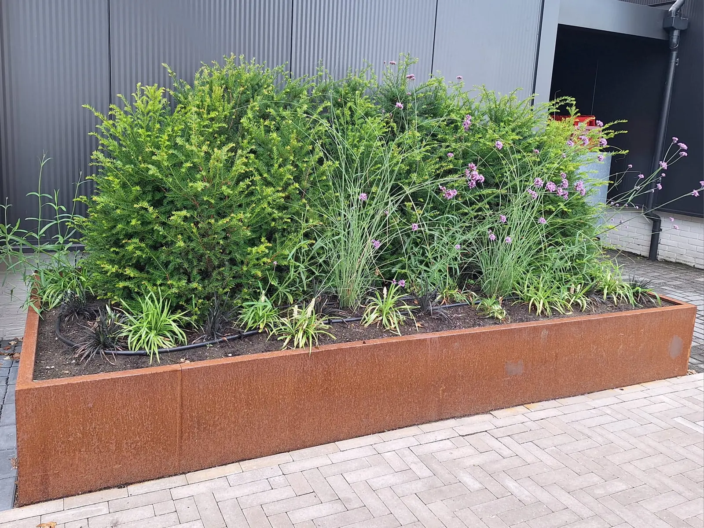
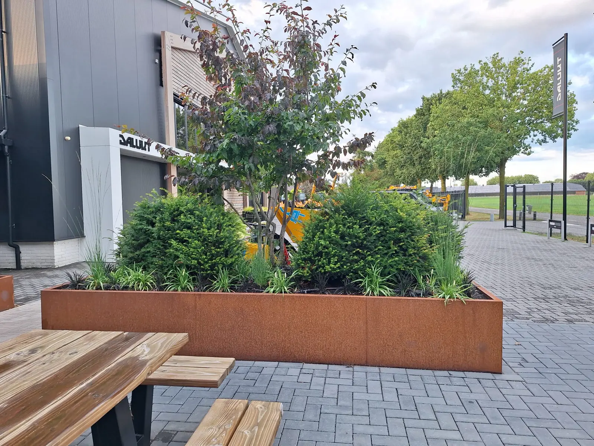
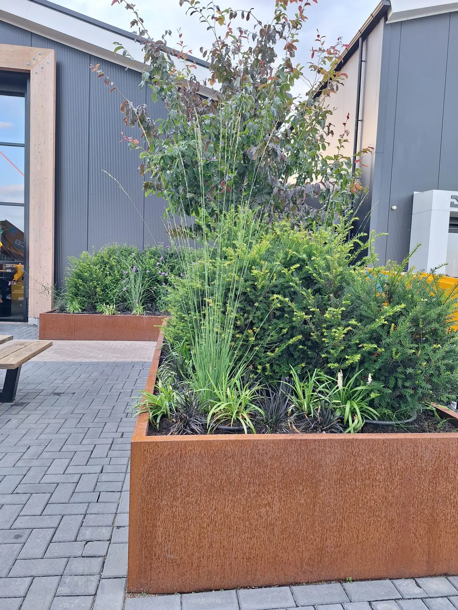
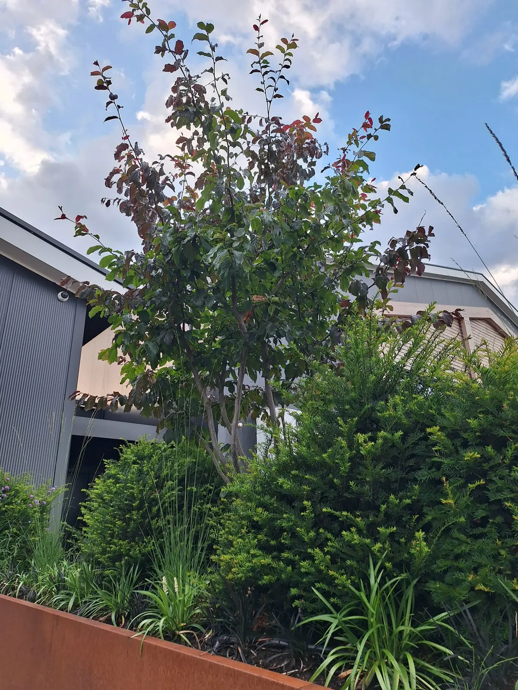
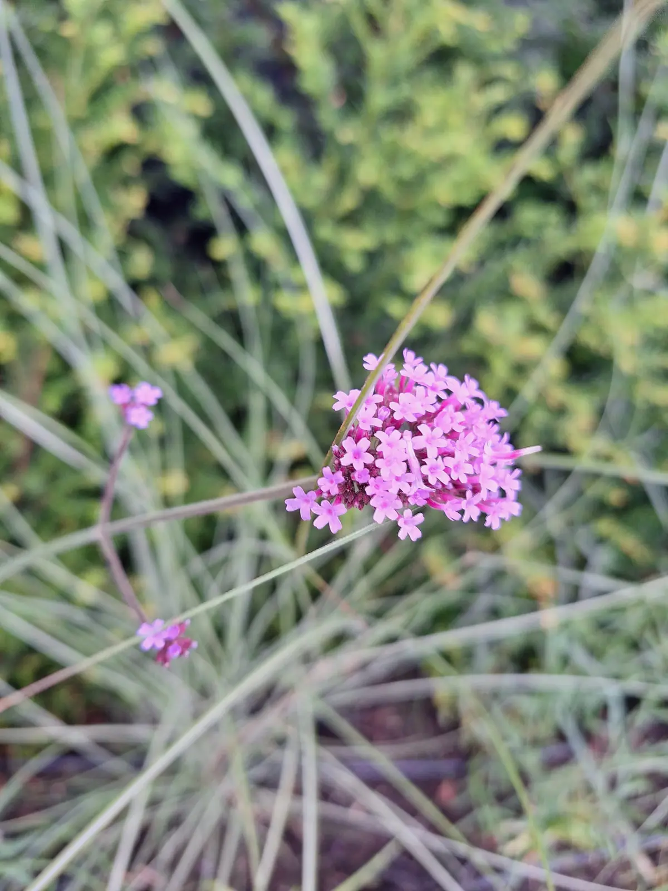
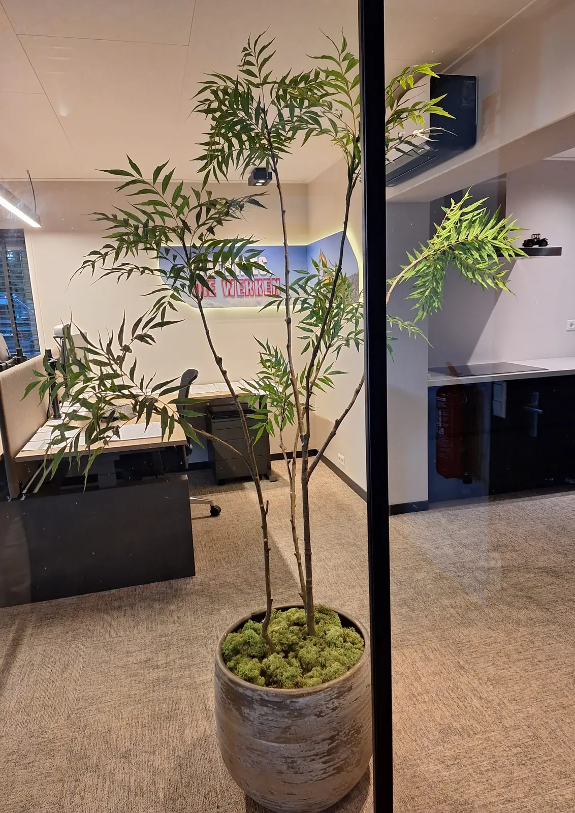
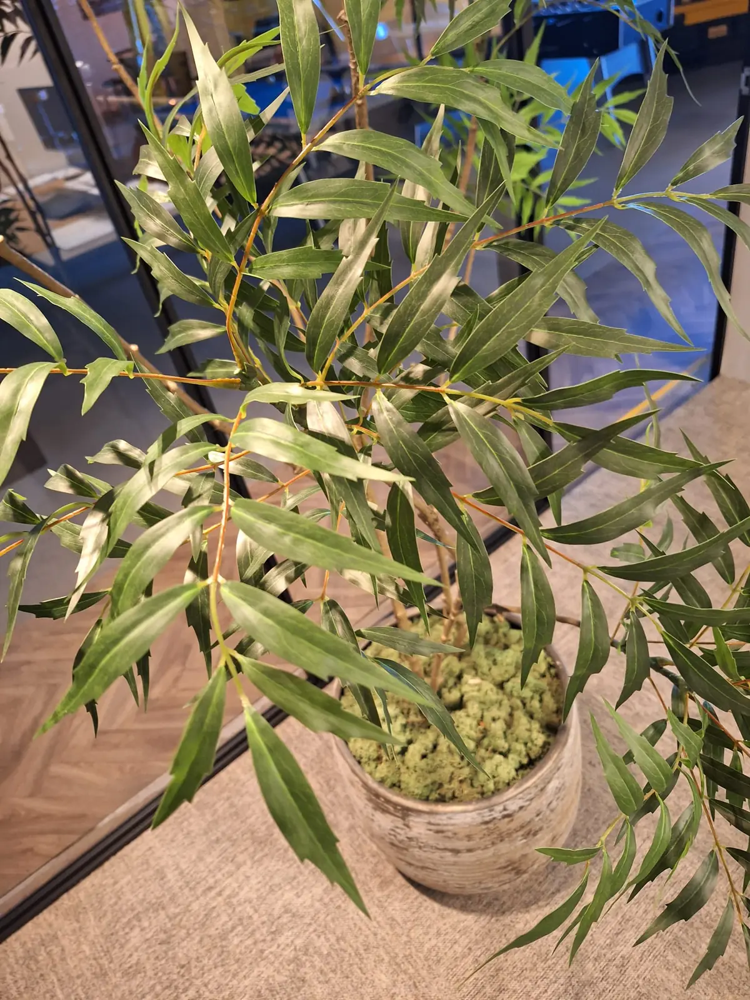
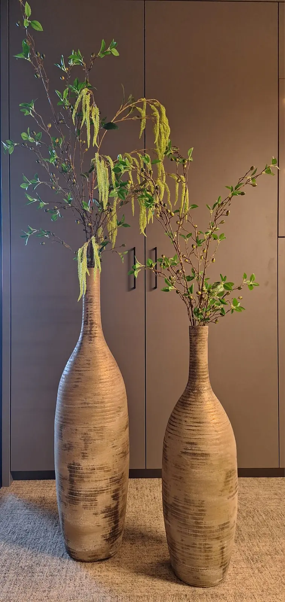
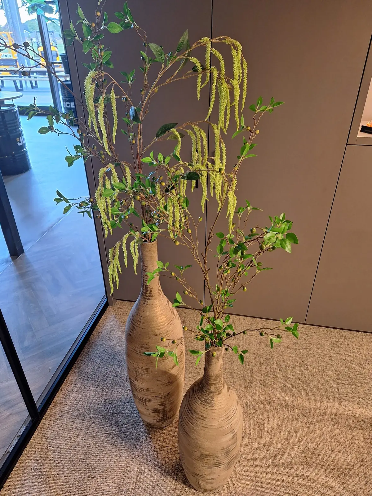
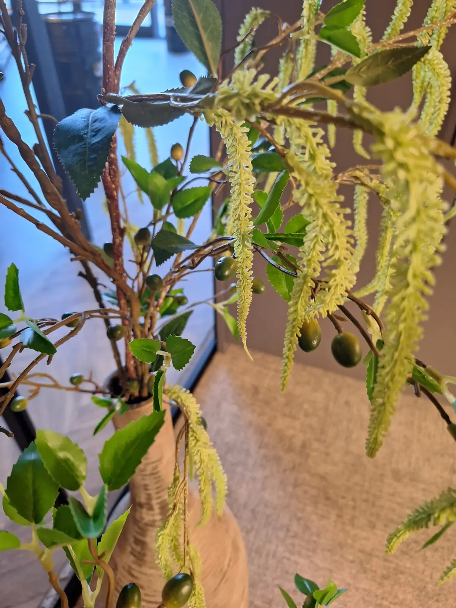

Voor Dalukt in Barneveld vergroenden we de entree van het bedrijfspand met strakke cortenstalen plantenbakken. De warme roestkleur van het cortenstaal steekt prachtig af tegen de antracietkleurige gevel. In de bakken een gelaagd beplantingsplan: taxus als groene ruggengraat, luchtige siergrassen en Verbena bonariensis voor beweging en kleur, zwart slangengras als donker contrast en een meerstammige solitair als blikvanger. Druppelirrigatie houdt het geheel moeiteloos groen, seizoen na seizoen. De aanleg van de bakken en het groen realiseerden we in samenwerking met Moerman Hoveniers.
Binnen kreeg het kantoor dezelfde aandacht: hoge keramische vazen met zijden takken en een volle kunstplant met moslaag brengen rust en sfeer in de werkruimte — representatief groen, zonder onderhoud.









